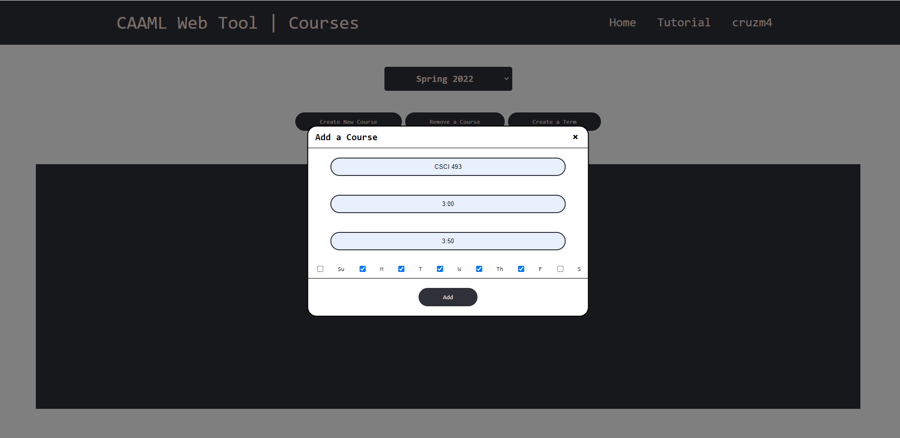
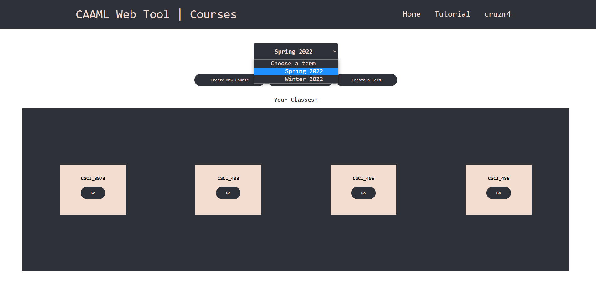

I'm a recent Computer Science graduate out of Western Washington University. For the past year and a half, I've been focusing on web development
through my senior project and other side projects, mainly using HTML/CSS and Javascript, PHP, and React. Along with that, I've had the privilege
of assisting with research in the hardware security realm, developing software representations using Python. I absolutely loved both of these projects
for the vast amount of learning and problem solving that had to be done.
Experience
Research Assistant
Western Washington University -- Professor Tarek Idriss
Implemented and tested numerous Python-based software representations of novel hardware security ideas. Created scripts for machine learning benchmarking on computed data from the software representations.
Logged and analyzed results using wanDB to examine the security measures against other types of PUFs.
PUF Overview: PUF stands for Physically Unclonable Functions and aims to use the uniqueness of integrated circuits (ICs) of a device at the microscopic level
to generate and authenticate keys. The idea is, even if two people purchased the same device, from the same manufacturer, manufactured just seconds apart,
the circuits in those devices still differ just enough to be unique- like a snowflake. We can send signals though these unique ICs, using numerous evaluation techniques,
to create unique keys. Once a key has been obtained, we then run a set of many challenges through the PUF to get the same number of unique responses, these are called
Challenge-Response Pairs (CRPs). Since we have the set of unique CRPs, we can use them to authenticate any transaction over the internet. A has the CRPs, B has the key, A sends
B challenges in which they use the key to evaluate, then B sends the responses back to A. If the CRPs match up, then B indeed has the key and is who they say they are.
Types of PUFs I worked on here
Tools used: Python, Tensorflow, WanDB, LaTeX, Microsoft Excel
October 2020 - December 2021
Front End Web Developer
CAAML Web Tool
Practiced the Agile Scrum development process with a team of 4 to create a website used by college professors to improve their lecture efficiency.
It does this by reading the annotated output of a ML audio analysis algorithm called CAAML (a black box we were provided with from our client). CAAML determines snippets of audio
into 1 of 9 categories, some examples being Student Question, Group Work, Instructor Question, and Lecture. Our website organizes lectures by
course and courses by term using a mock database in a file system. Upon arrival on a course page, the user is able to toggle through various graphs created using D3.js which were designed to
visualize the way the professor is lecturing for analysis. The user has many controls over these graphs as they were built from scratch to meet our client's requests.
Tools used: Agile Scrum, HTML, CSS, JavaScript, Node.js, Express.js, D3.js, Adobe XD, Trello, CAS Login System
January 2021 - December 2021
Home page/landing page
Here's the unfinished landing/home page where users login. Includes sections that describe use cases of our product,
a tutorial section, and descriptions of the various graphs included.
User Login
Our project connected to WWU's CAS Login System which is a secure login system where only
WWU accounts could log in. Users cannot go beyond the home page without logging into their Western Accounts.
My Courses Page -- Create New Term
Once logged in, you can go to your user associated the 'my courses' page where you can create terms.
Here is the create a term modal I created. This has basic validation and successfully creates a new folder
that courses can populate.
My Courses Page -- Add a course

This modal handles the sub folder that holds actual classroom lectures. This course is then added to whichever term is selected
from the drop down you see right above.
My Courses Page -- Term Selector and Course Cards

This image is demonstrating how the dropdown works and what the course cards look like. You can click "Go" on any
of these cards to view that courses' lectures.
My Courses Page -- Remove a Course
Upon clicking the 'remove a course' button', the user will have the option to remove any course and delete all of it's data. This
is in case the user accidentally named a course incorrectly or just doesn't want the data anymore.
Record Page
This unfinished record page is meant to stream the users webcam and audio to the ML algorithm for evaluation. The main purpose of this
page is for the user to easily identify if they're recording and what's getting picked up from the input sources.
Record Page
Course Page -- Heat Map
Here's the course page that will automatically compute graphs based on the lectures logged for that course. Here are demonstrations of the
various graphs my team's implemented.
Created a web application to mock a real world scenario where customers can visit a restaurants website and order food off of their menu.
This projects purpose was to get me more familiar with a larger application and the power of Reacts dynamic front end capabilities. I need to style
a bit more, and handle user orders. It is currently connected to a firebase REST API for pulling recipes stored in the restaurants database.
A web application where the users input their expenses and see them visually to keep track on the money they've spent. A Firebase REST API is connected which is used for
account sign up and login capabilities, as well as expense adding, deleting, and editing. I'm planning on adding multiple charts
to the logged in users spending habits.
Implemented an Android app in which the user inputs what they have in their virtual 'pantry' and recieves a list of recipes from a Volley API call that
they're able to cook at the moment. This app is connected to a database using SQLite for persistent data and has other features like a shopping list, a Google maps API that shows
the user the nearest grocery stores, and a camera button for shareable pictures of their creations. In the MVC architecture, I worked primarily on the view and controller. This
was my first full mobile app I've ever worked on so it was a big learning experience for me and helped reinforce my understanding of MVC, dynamically updating pages, and database
connection and manipulation.
If you have an ad blocker enabled, this video will throw an error. Click here instead
More screenshots to come!
TCP Chatroom
Created a server/client based command line chatroom with a partner using the TCP protocol in C. Once the server is connected, participants or observers can enter the chat room. Participants are able
to send global messages or direct messges to specific participants. Observers tune in by picking a participants username who's already in the chatroom where they can see any direct messages to their
participant or any global message. In other words, participants act as the message box of a chatroom and observers act as the viewing box of that participant. This project helped me understand
socket connections, timeout implementations, buffer overflow handling, message handling, the TCP protocol, server/client communication, and forking.
Tools used: C, Gitlab CICD, TCP Protocol, Git
November 2020 - December 2020
Commands for initiating chatroom
I'm using Tmux to host two observer windows (top left/right), two participant windows (bottom left/right), and one server window (middle).
The commands to run these programs are typed in, and you can find on my github.
Server start/connections made
Upon running the proper commands, the server will listen on the observer and participant ports for connections. Once connected as a participant,
type in a username to join the chatroom. Once connected as an observer, type in a username of a connected participant you want to observe.
Participant Connection
Server will reflect who's joined
Observer Connection and messaging
Observers can see all global messages or private messages intened to the participant they're connected to.
Private message
You can see that user_two (right) sends a private message to user_one by starting the message with "@user_one " and is denoted on user_one's observer
through a "%" symbol. You can also see that user_two's observer cannot see that private message. If the participant tries to send a private message to
an invalid user, the server handles it and tell's that participants connected observer that the intended user does not exist.
Deadwood GUI
Worked with a partner on a clickable graphical representation of the board game, Deadwood. We were given XML files which we parsed to obtain all illustrations needed for the game.
Using JavaFX, we practiced MVC architectural skills, Object Oriented Design and Programming, Class inheritence understanding, Interface knowledge, and game concepts. This was a
pain of a project with tight deadlines and workload I had with that class alone. It was my first taste of strict time management which helped me tremendously through the rest of
my college career.
Tools used: Java, XML, UML Class Diagrams, JavaFX, MVC Architecture, Use Cases
April 2020 - June 2020
UShell
Implemented a microshell in C that is capable of processing common shell commands like cd, ls, piping, signal interrupts, and expanding environmental variables.
This was my first time programming in C so this project helped me learn a lot about how pointers worked, argument parsing, buffer overflow, parent and child processes,
structs, Makefiles, and segmentation faults. It also gave me the opportunity to apply
my knowledge of state machines a great deal and was a pivotal turning point in the way I analyzed and solved a problem before putting it into code.
Tools used: C, State Machines, GDB
January 2020 - March 2020
Skills
Programming Languages & Tools
Web Development
HTML/CSS
JavaScript
JSX
PHP
SQL
Programming Languages
Python
Java
C
Libraries
React.js
Node.js
Express.js
Tensorflow
WanDB
Other technologies/tools
Android Studio
Docker
Kubernetes
Git
Bash
MySQL
SQLite
Joomla
CICD
Microsoft Office
VS Code
LaTeX
Education
Western Washington University
Bachelor of Science - Computer Science
Whiteboard Coders Club, Intramural Football
GPA: 3.11
September 2017 - December 2021
Skyview High School
AP Student
National Honors Society, GEAR UP, Football, Track and Field, APX, Make-A-Wish Foundation
GPA: 3.81
August 2013 - June 2017
Interests
I love the outdoors! While outside, I'm usually snowboarding, hiking, or taking pictures of nature stuff. During the warmer seasons,
I like camping out with frineds, climbing mountains, or cruising around on a longboard. When forced indoors because of the nasty elements of the PNW,
you can find me practicing my chef and guitar skills, and most importantly, the latest technological advancements in the front-end world of web development.